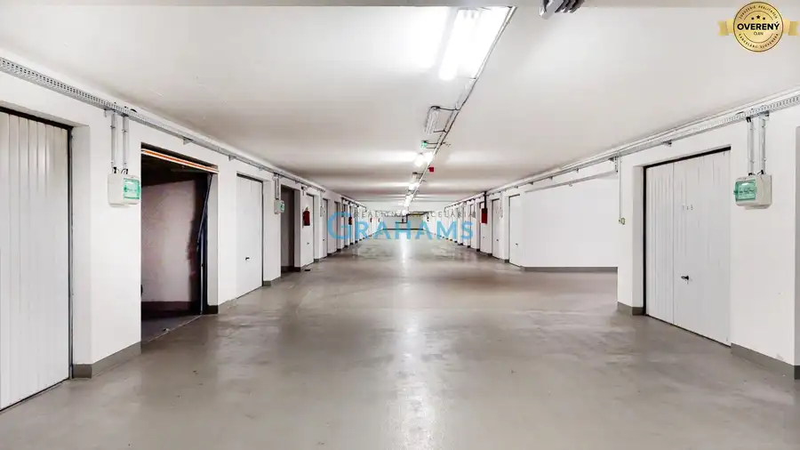
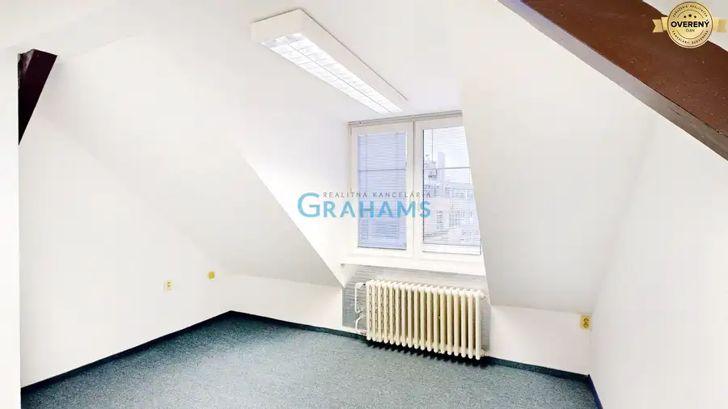
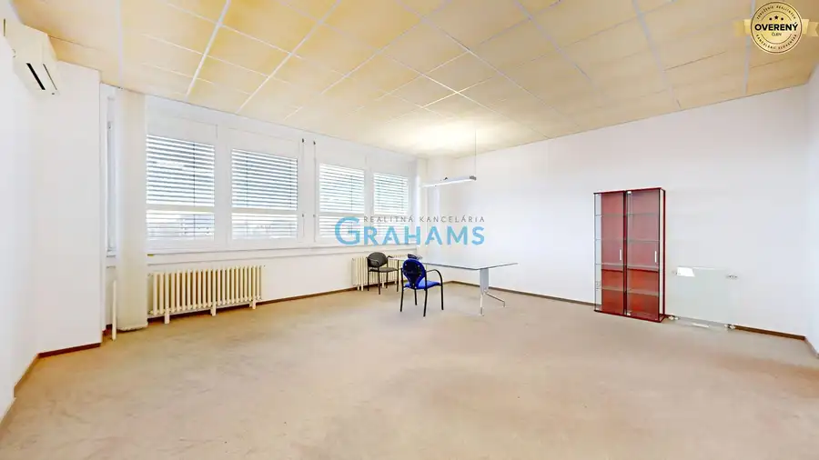
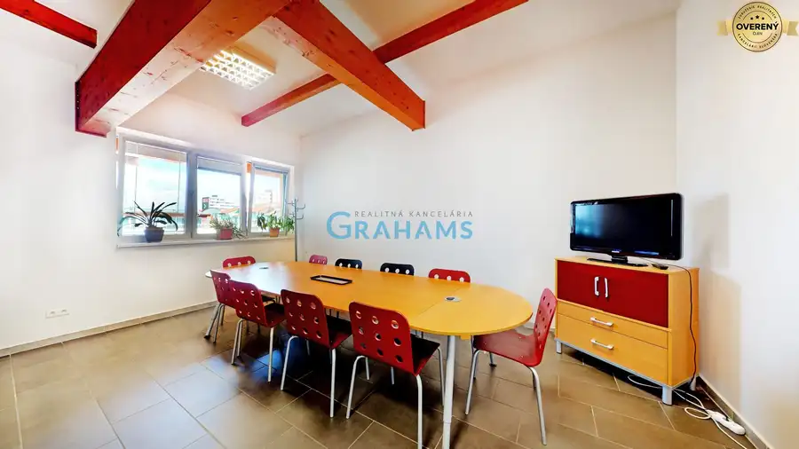
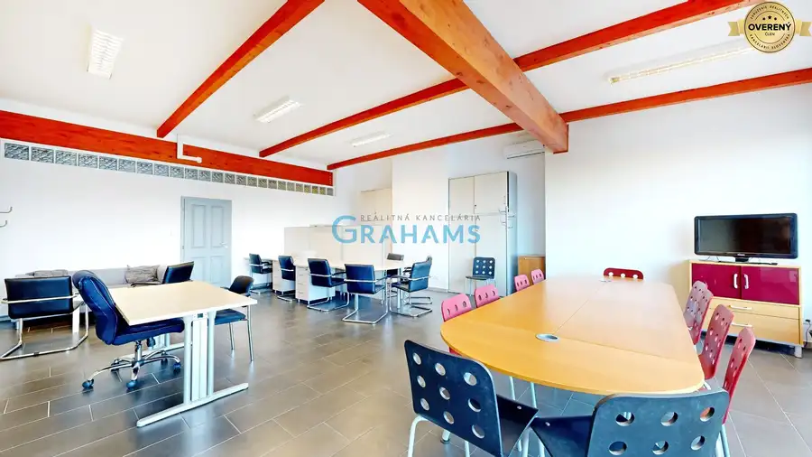
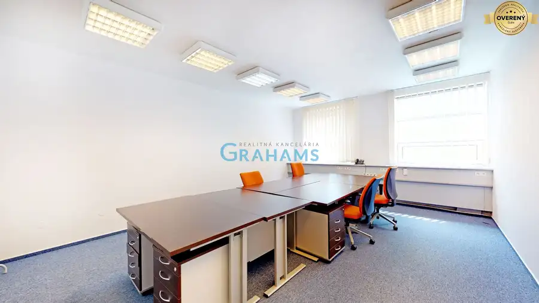
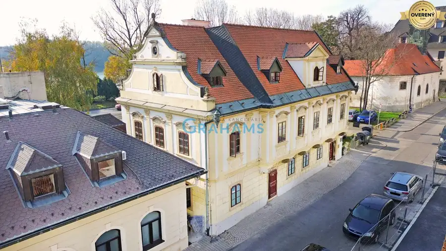

Aktuálna ponuka
12 nehnuteľností, predovšetkým byty. Každá má vlastnú stránku s fotkami, popisom a mapou.
Prezrieť ponuku
Erika KostroňováRealitná maklérka
Realitná maklérka · Grahams
Predaj a prenájom nehnuteľností · Bratislava


 Nebytové priestory10
169 900 €Klimatizovaný obchodný priestor - showroom alebo klinika,vstup z ulice
Podunajské Biskupice, Bratislava
107 m²
Realitná kancelária Grahams Vám v exkluzívnom zastúpení klienta ponúka na predaj nebytový/obchodný priestor s výmerou 107 m², na ulica Estónska, v…
Nebytové priestory10
Cena dohodouPrvotriedne kancelárske priestory na nábreží Dunaja – Zuckermandel
Staré Mesto, Bratislava
10 m²1. podlažie
Realitná kancelária Grahams Vám v zastúpení klienta ponúka na prenájom unikátne kancelárske priestory s výmerou od 10 m2 na 1. poschodí 5…
Nebytové priestory10
Cena dohodouFunkčný kanc. priestor od 18,5 m2, skvelá dostupnosť a cena, Ružinov.
Ružinov, Bratislava
18.5 m²5. podlažie
Realitná kancelária Grahams Vám ponúka na prenájom kancelárske priestory v moderne zrekonštruovanej budove na Drieňovej ulici v mestskej časti…
Nebytové priestory10
169 900 €Klimatizovaný obchodný priestor - showroom alebo klinika,vstup z ulice
Podunajské Biskupice, Bratislava
107 m²
Realitná kancelária Grahams Vám v exkluzívnom zastúpení klienta ponúka na predaj nebytový/obchodný priestor s výmerou 107 m², na ulica Estónska, v…
Nebytové priestory10
Cena dohodouPrvotriedne kancelárske priestory na nábreží Dunaja – Zuckermandel
Staré Mesto, Bratislava
10 m²1. podlažie
Realitná kancelária Grahams Vám v zastúpení klienta ponúka na prenájom unikátne kancelárske priestory s výmerou od 10 m2 na 1. poschodí 5…
Nebytové priestory10
Cena dohodouFunkčný kanc. priestor od 18,5 m2, skvelá dostupnosť a cena, Ružinov.
Ružinov, Bratislava
18.5 m²5. podlažie
Realitná kancelária Grahams Vám ponúka na prenájom kancelárske priestory v moderne zrekonštruovanej budove na Drieňovej ulici v mestskej časti…

Nebytové priestory3 Cena dohodouBezpečný, suchý skladový priestor 37 m², prístup autom 24/7, Šustekova Petržalka, Bratislava 37 m² Realitná kancelária Grahams Vám v zastúpení majiteľa ponúka na prenájom samostatný, suchý a bezpečný skladový priestor s výmerou 37 m². Sklad sa…
Nebytové priestory10 Cena dohodouKancelárske priestory v centre Staré Mesto od 16 m2, Grösslingova ul. Staré Mesto, Bratislava 16 m²2. podlažie Realitná kancelária Grahams Vám ponúka na prenájom kancelárske priestory od 16 m2 v centre Satého Mesta v administratívnej budove na Grösslingovej…
Nebytové priestory10 Cena dohodouPrenájom kancelárske priestory výmera 159,65 m2 Drieňová, Ružinov Ružinov, Bratislava 159.65 m²5. podlažie Realitná kancelária Grahams Vám ponúka na prenájom kancelárske priestory v moderne zrekonštruovanej budove na Drieňovej ulici v mestskej časti…
Nebytové priestory7 Cena dohodouTOP adresa: Klimatizovaný 42 m² office s kompletným zázemím Šustekova Petržalka, Bratislava 28 m²6. podlažie Realitná kancelária Grahams Vám v exkluzívnom zastúpení klienta ponúka na prenájom kancelársky priestor s výmerou 42,00 m2 na 6. poschodí 6…
Nebytové priestory10 Cena dohodouKlimatizovaná 91 m² kancelária s vlastnou terasou – Šustekova ul. Petržalka, Bratislava 1-izbový61.6 m²6. podlažie Realitná kancelária Grahams Vám v exkluzívnom zastúpení klienta ponúka na prenájom kancelársky priestor s výmerou 91,61 m2 , na 6. poschodí 6…
Nebytové priestory9 Cena dohodouKancelárie od 25,7 m² s parkovaním, recepcia 24/7 – Košická ul., Nivy Nivy, Bratislava 25.7 m²4. podlažie Realitná kancelária Grahams Vám v zastúpení klienta ponúka na prenájom 7 kancelárskych priestorov s výmerou 15,8 m2, 39,1 m2, 31,5 m2, 42,9 m2, 34,5…Tomuto výberu zatiaľ nezodpovedá žiadna ponuka. Napíšte mi, čo hľadáte.
Volám sa Ing. Erika Kostroňová. Som realitná maklérka kancelárie Grahams a pôsobím predovšetkým v lokalitách Bratislava a okolie.
12 nehnuteľností, predovšetkým byty. Každá má vlastnú stránku s fotkami, popisom a mapou.
Prezrieť ponuku
Bratislava a okolie. Ponuku si môžete prezrieť podľa lokality.
Nehnuteľnosti v lokaliteOdhad trhovej ceny, príprava prezentácie, obhliadky, zmluvy a odovzdanie nehnuteľnosti.
Dohodnúť stretnutieNa čo sa pýtate najčastejšie, skôr než sa stretneme.
Odhad trhovej ceny vychádza z aktuálnych ponúk a predajov v lokalite, nie z cenníkových tabuliek. Podmienky Vám poviem pri prvom telefonáte.
Najprv obhliadka a odhad ceny, potom príprava prezentácie (fotografie, popis, inzercia), obhliadky so záujemcami, rezervačná zmluva, kúpna zmluva, návrh na vklad do katastra a odovzdanie nehnuteľnosti. O každom kroku viete vopred.
Najrýchlejšie cez WhatsApp alebo telefón. Termín stretnutia alebo obhliadky dohodneme podľa Vás.